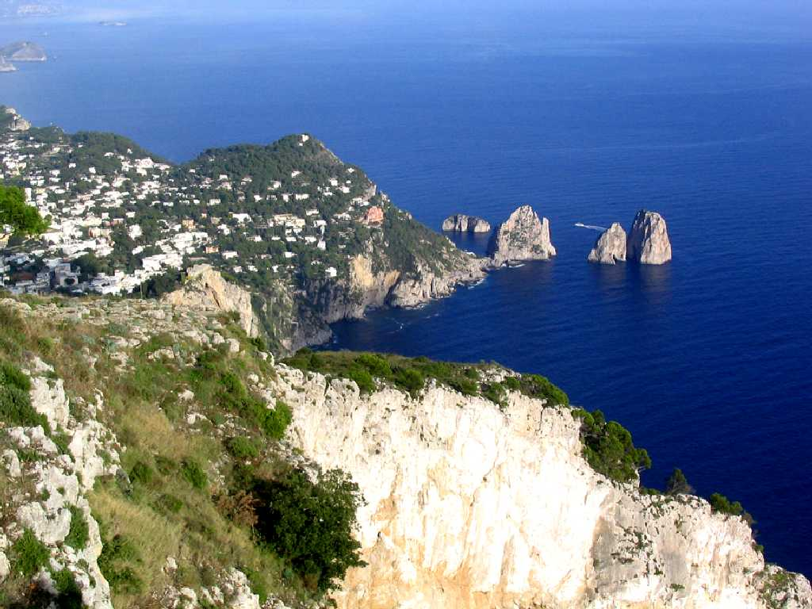
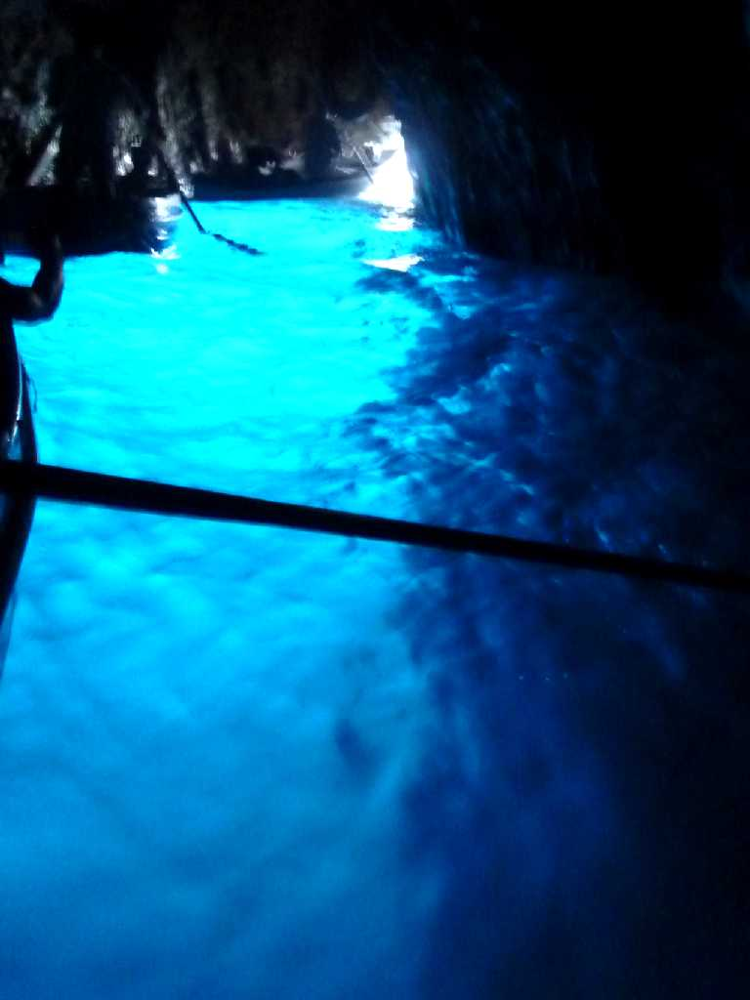
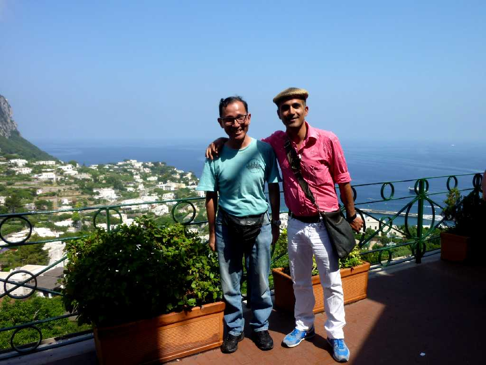
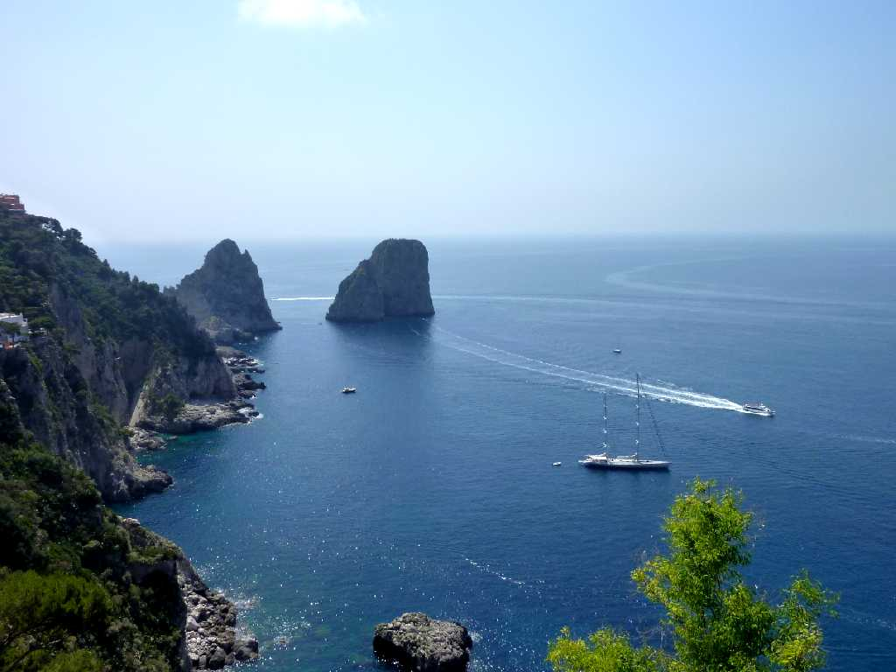

Monte Solaro Capri
青の洞窟に入れないためカプリ島最高峰５８９ｍのソラーロ山頂にリフトで登る
September 3 2010 Monte Solaro Capri

Grotta Azzurra Capri
昨年の世界一周クルーズで入れなかった青の洞窟に運良く入れました 大変綺麗で感動しましたが前２日間入れなかったため大混雑でした

June 21 2011 Piazza Umberto Capri

Faraglioni Giardini di Augusto Capri
アウグスト公園からフォラリオーニの岩を望む